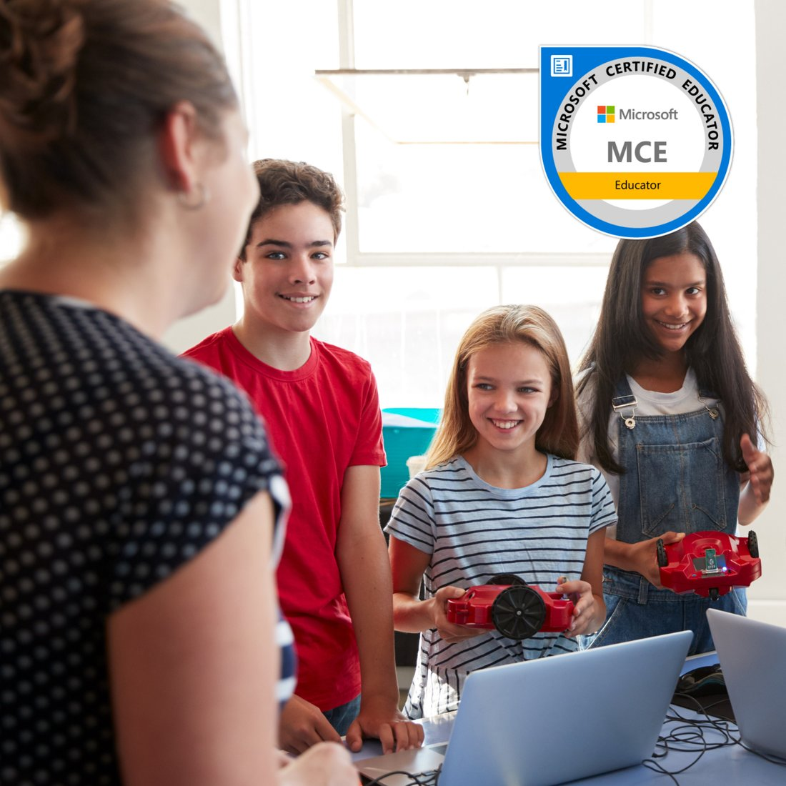

Earn Your Master’s Degree in Computing in Education
Our MA in Computing in Education is the only online master’s in the region combining Education and Computer Science, and you graduate ready to teach programming, design online learning, and lead educational technology — with the Microsoft Certified Educator certificate included.
Open To All Backgrounds
You don't need a computer science background.

Our MA in Computing in Education brings education and computer science together in one degree. You do not need a technical background to join. The program admits educators, career changers from HR or corporate training, and graduates from other fields.
Python, gaming, and robotics are taught from the ground up. You learn to use them, and to teach with them.
The MA is 36 credits across 11 courses and an MA project. It is 100% online and asynchronous, so you study at your own pace. You graduate with an AUB master’s recognized by NYSED, plus the Microsoft Certified Educator (MCE) certificate at no extra cost.
Two of the 11 courses are prerequisites and can be waived for students with an Education or Computer Science background.
The Curriculum
Your MA journey, explained.
36 credits across 11 courses and a capstone project. Each course takes about seven weeks. Most students finish in 1.5 to 2 years.
Learn the ethics of technology: responsible ways to access, manage, exchange, and share information online. Taught by Dr. Hoda Baytiyeh.
Learn the fundamentals of online learning, for K-12 students and adult learners, in formal and informal settings. Taught by Dr. Hugo Hachem.
Learn the core principles, tools, and techniques of instructional design, then apply them in real course projects. Taught by Rayane Fayed and Rana al Ghazzi.
Explore how schools use technology and information systems at the administrative level: for decision-making, planning, and communication. Taught by Dr. Mahmud Shihab.
Reflect on the roles digital technology plays in teaching and learning, and analyze past, current, and future developments in the field. Taught by Dr. Hugo Hachem.
Learn the theoretical and practical underpinnings of organizational structures, curriculum delivery, external examinations, and the ethical and legal aspects of teaching. Taught by Dr. Amal BouZeineddine.
Study instructional theories, cognitive development, and learning theory, and how behavior methods apply in real classrooms. Taught by Dr. Vivian Khamis.
Develop a scientific approach to educational problems, work with a variety of research designs, and cover basic statistics. Taught by Dr. Hugo Hachem.
Get a working introduction to computer science, and learn to teach programming and computational thinking in schools using Python. Taught by Dr. Saeed Raheel.
Learn how computers work from both the hardware and software side: basic networking, web authoring with HTML and CSS, and handling data in spreadsheets and databases. Taught by Dr. Haidar Safa.
Use research-based practices to build real-world learning experiences with gaming, robotics, and design technology. Taught by Yassine Zein.
Apply what you have learned across the program in one capstone project. Many students build something they can use in their current school or workplace. Supervised by a project advisor of your choice.
For students with Education or Computer Science background, up to 2 courses can be waived as prerequisites.
Program Details
Study without pausing your career.
What You Graduate With
Your Journey
How the MA builds, semester by semester.
The program moves from foundations to technical fluency to applied work. Each stage builds on the one before it.
You build your educational foundations.
You study how online learning works, how technology is used ethically, and how schools are structured. This is the base the rest of the program builds on.
You start designing and building.
You apply instructional design principles to build real online courses. You also study how educational technology is evolving and where the field is heading.
You add programming to your skill set.
You learn Python and computational thinking through the lens of teaching: how to bring programming into a K-12 classroom or a training environment.
You work with gaming, robotics, and research.
You integrate gaming, robotics, and design technology into learning experiences, grounded in research methodology. The MCE certification work is built in alongside your coursework.
You graduate with two credentials and a capstone.
An AUB MA recognized by NYSED, the Microsoft Certified Educator certificate, and a capstone project you can use in your career. The degree can also support PhD applications, subject to your academic standing.
From Graduates
What our students say.
The MA is where the learning really opened up for me. It helped me think more critically about how learning happens online, how to design instruction that is inclusive and engaging, and how to evaluate whether a program is actually achieving its goals.

The MA in Computing in Education gave me the opportunity to connect my existing background and skills with educational theory, research, and technology. It helped me organize what I already knew, deepen it through research, and translate that knowledge into practical solutions.
With over 20 years in education, I saw the AI and technology revolution coming and refused to be left behind… the MA in Computing in Education, where I found the tools to excel and to become an educator who moves forward with AI and technology, not one left behind by it.

How We Compare
A recognized master’s at a lower cost.
| AUB — MA in Computing in Education | Typical US/UK Online EdTech Master’s | Regional Online Master’s | |
|---|---|---|---|
| Tuition | $16,200 ($450/credit) | Often $20,000+ | Varies |
| Fully Online | ✓ 100% asynchronous | Hybrid options may apply | Hybrid options may apply |
| Education + CS in One Degree | ✓ Both fields in one curriculum | Usually one field only | Usually one field |
| MCE Included | ✓ At no extra cost | Rarely included | Rarely included |
Faculty
Meet your instructors.
The MA is taught by AUB faculty in education and computing.
Take the First Step
Talk to Mike, our program advisor.
A short conversation can save you weeks of wondering. Share where you are in your career and what you want next, and you will get straight answers about the MA, the cost, and whether it fits your plans.
Request information
Takes about a minute. No obligation.
By submitting this form, you consent to AUB contacting you about this program.
Common Questions
Everything you need to know before you decide.
No. The AUB MA in Computing in Education admits students from varied academic backgrounds. The technical content is taught in a pedagogical frame and does not assume prior computer science training. Two of the 11 courses are prerequisites and can be exempted for students with Education or Computer Science background.
Applicants need a bachelor’s degree from a recognized institution with a minimum GPA of 3.0, an English proficiency test, and two recommendation letters. The AUB MA in Computing in Education is open to graduates of all backgrounds and majors. Work experience is helpful but is not required for admission.
Yes. The AUB MA in Computing in Education is 100% online and fully asynchronous, with no fixed class times. Each course runs about seven weeks. Most students spend 10 to 15 hours per week on coursework and complete the 36-credit program in 1.5 to 2 years.
Yes. The Microsoft Certified Educator (MCE) certification is built into the AUB MA in Computing in Education at no additional cost. Students complete the MCE assessment alongside their coursework and graduate holding both the AUB master’s degree and the MCE certificate.
The AUB MA in Computing in Education is recognized by the New York State Education Department (NYSED), which gives the degree standing in the United States and with international employers. The degree can also support PhD applications, subject to academic standing. One note for Lebanon-based applicants: the program is not currently accredited by the Lebanese Ministry of Education. An AUB advisor can explain what this means for your situation.
Yes. AUB offers a 12-credit Graduate Diploma in Online Education that takes about nine months to complete. All 12 diploma credits transfer directly into the MA in Computing in Education. Some diploma graduates choose to continue into the full master’s program, and the diploma also stands as an independent credential.
Tuition for the AUB MA in Computing in Education is $450 per credit, which is $16,200 for the full 36-credit program. AUB alumni and staff receive a 15% discount, corporate groups of five or more receive 15 to 20% off, and payment plans are available through the Comptroller’s office.